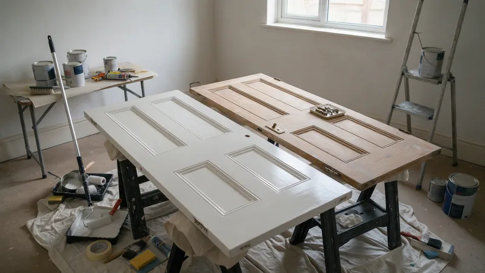

Why old woodwork looks the way it does
Most skirting and most doors in an older house are carrying a lot of coats. Each one has been brushed over the last without much sanding, so the brush marks have built on top of brush marks and the mouldings have gone soft and the sharp edges have filled in. The yellowing on top of it all is old oil based paint doing what old oil based paint does, especially behind a door or anywhere out of daylight.
Putting another coat on top of that gives you a slightly whiter version of the same thing. Getting it flat again means sanding it back properly, filling the dents and the splits, and in a few cases taking a door right back. That is the difference in price between two quotes for the same room, and it is worth asking about rather than guessing.
Water based or oil based
Most woodwork now gets done in water based satinwood or eggshell, and for good reasons: it dries fast enough to get two coats on in a day, it smells far less, and it does not go yellow in a dark hallway the way traditional oil based paint does.
Oil based still has a place. It flows out flatter, so on a door where you want that deep glass like look it is still the one, and it is tougher in some situations. The trade is time, smell and the yellowing. We will tell you which we would use and why, and if you have a preference we will work to it.
Doors, and the small things that give a job away
Handles, escutcheons and hinges come off where they can rather than getting cut round, because a painted screw head is the first thing a careful eye finds. Doors get painted in the right order, the panels and mouldings first and the flat stiles and rails after, so the brush is always working into wet paint and there are no laps.
Edges matter. The hinge edge, the lock edge and the top of the door all get done, and then the door gets left open long enough to go off properly, because a door closed too early sticks to the frame and takes the paint with it when it opens. On a water based paint that is hours. On oil based it is overnight.

Generated photoGenerated for this demo. Not a photograph of a real job.
 Generated photo
Generated photoA long run of skirting is where a steady hand shows. The tape is for the floor, not for the line.
On the job
How this one usually goes.
- Fittings off and the room protectedHandles, escutcheons, hooks and plates off and bagged. Floor sheeted, and anything glazed masked at the edge.
- Wash, sand and fillGrease and old polish washed off, the whole lot sanded back flat, dents and splits filled, and any soft or split timber dealt with rather than filled over.
- Knot, prime and spot primeKnots treated so the resin cannot come through, bare timber primed, and any filled patch spot primed so it does not flash through the top coat.
- Undercoat where it earns itOn a big colour change, on bare wood, or on anything going back to a sharp finish. Rubbed down lightly between coats, which is what makes the top coat feel smooth.
- Two top coats, and left openTwo coats brushed in the right order so nothing laps, then doors left open to harden off before anything closes on them. Fittings back on last.
A sample running order for this demo. Yours depends on the property and what the surfaces turn out to be doing.
Questions
Asked about this job.
Can you get rid of the yellowing?
Yes, by covering it with a modern water based paint, but only after it has been sanded and in some cases primed, because old oil based paint is hard and slick and nothing water based grips it on its own. Skipping that is why doors sometimes mark with a thumbnail a week later.
Do you take the doors off?
Usually not. A door is normally painted in place with the floor sheeted, which is quicker and avoids the hassle of rehanging. If a door needs taking right back, or it is getting a finish that wants laying flat, then it comes off and goes on trestles.
How long before I can shut the door?
A few hours for water based, overnight for oil based, and longer in a cold damp room. Paint feels dry long before it is hard. A door closed too early sticks to the frame and pulls the paint when it opens.
Can you paint over varnished or stained wood?
Yes, with preparation. Varnish gets keyed back so there is a surface for the primer to hold, then a primer that is made for the job. Straight paint onto varnish sits on top of it and chips off at the first knock.
What about the spindles and the stairs?
They are slow and they are worth doing right. Each spindle is three or four sides, and a run of them is a day in itself. Treads and anything walked on are a different question, because they need something much tougher than normal woodwork paint.
General trade knowledge written for this demo, not advice on your property.
Our work
Sample jobs like this.
Generated photoA long run of skirtingThornton-Cleveleys · Sample Generated photoHall, stairs and landingKirkham · Sample
Generated photoHall, stairs and landingKirkham · SampleMade up samples with generated pictures. Tap one for the detail.
Also
The other things we do.
Interior painting
Walls, ceilings and the bits either side of them. Filled, caulked, sanded and dusted off before a drop of paint goes on, then laid off properly.
More →Exterior painting
Render, pebbledash and masonry out front, and the timber that holds it all together. Done in the right months, on a dry wall, in the right order.
More →Wallpaper hanging
One feature wall or a whole room. Lining where the wall needs it, plumbed off a line rather than off the corner, and patterns matched at every seam.
More →Kitchen cabinet painting
Doors off, degreased, keyed, primed for the surface they actually are, then two thin coats. A new looking kitchen without a new kitchen.
More →Commercial and rental refreshes
Empty flats, offices, salons and holiday lets. Worked round the keys and the cleaners rather than round us, and left ready to photograph.
More →Shall somebody come and look at it?
Tell us which rooms and your postcode. Twenty minutes with a light held along the wall tells us more than any photograph.